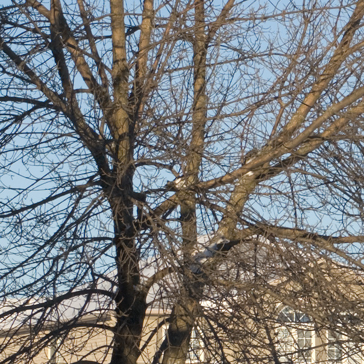
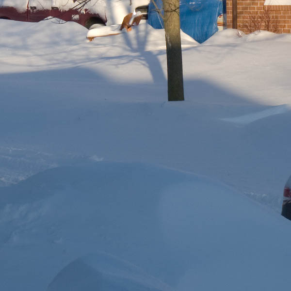

|
The Pentax K20D: a RAW reviewPage 2, version 2.2, © 2008 by Dale Cotton, all rights reserved Intro Handling Res Colour DR & noise High ISOs JPEGs Human subj. SR K10D comp. Eval Image QualityProcedural note 3: to evaluate a camera's image quality the first requirement is that the lens be good enough such that what we're seeing is the limits of the camera and not the limits of the lens. I use the Pentax 16-45 f/4 throughout this review, which seems to be very much up to snuff other than some blur and chromatic aberrations in the corners. I also use Adobe Lightroom 1.4 for raw image processing. IQ 1: Resolution and acutanceAfter leaving behind over a foot of snow, the storm cleared Saturday night, leaving me with perfect blue sky no wind weather on Sunday:
Fig. 4: Shovelling ahead (100 ISO, tripod). (Full size 4.8 mp JPEG. Full size 14.4 mp DNG.) First things first, Fig. 4 was intended for the single purpose of finding out how large a print the K20D is good for under ideal conditions. Ideal conditions meaning tripod, low ISO, sweet spot of the lens (28mm @ f/8), mirror lock-up, RAW capture, bright light, and no wind. Having spent years doing wooded landscapes, the bare branches of distant trees is the most demanding subject matter I'm familiar with for sheer resolution and what I prefer to use for detail evaluation. The ash tree just right of the big fir is what I focused on and is about 60 feet away from the camera. For Fig. 4 I cranked out a PSD file in Lightroom with no sharpening, sent it to Photoshop, and applied the least invasive USM I could come up with to crispen up the acutance: Amount/Radius/Threshold 500/0.2/0 then 375/0.2/0 then a titch at 0.3. As you can see from Fig. 5, this very minimal dose of USM was enough to clean up the edges nicely:  Fig. 5: Actual pixels (100% mag.) crop (minimal USM) Then I set the ppi to an even 200 to give a print size of 15.5" x 23.3", took an 11" x 17" crop from that, put a sheet of 13" x 19" RC paper in my printer (Epson 3800), and hit Print. Ten minutes later I was holding a piece of paper that fairly boggled my mind. A friend of mine and sometime guest artist on this site does a combination of 6x7 medium format and 4x5 large format with fine-grained slide film scanned at 2500 ppi then printed to sizes like 18" x 22". The detail and sheer image quality I'm seeing when I look at this test print approaches 6x7 MF colour film to my eye. I then printed the entire frame at 288 ppi for a 11" x 16" image, fully expecting from past experience to be even more impressed with the finer scale detail ... but I wasn't. The second print was just smaller; there was no sense of more closely approaching contact print goodness. Several weeks later, after printing many other images, I can well affirm that this was no fluke. Steady, well-exposed landscapes at ISOs from 100 to 400 are stunning at 13" x 20" (240 native ppi) print sizes. IQ 2: Colour and gradations Fig. 6: Actual pixels (100% mag.) crop Since the days of the first commercial colour film, photographers have grown into the idea that you choose a film to give you a certain "look", meaning colour rendition. Digital camera brands and models really don't have a particular colour rendering signature; instead, you customize colour rendering both in the camera and in post-processing to taste. If you rely solely on in-camera colour settings (as in shooting JPEG), then yes, you'll see differences from camera to camera. But if you shoot RAW, colour handling starts with an accurate camera profile, the job of which is to ensure that colours captured match what the human eye would have seen when the frame was exposed. In the case of RAW shooting there can be camera-specific colour idiosyncracies, such as an inability for the camera to capture a specific hue, but the most meaningful variation is bit-depth, meaning the ability to distinguish between extremely fine differences in hue. Think of an egg. Not only do we want the exact shade of cream or brown, but we want the change in colour as more brightly lit areas blend into shadow areas. Update: The K20D has a bit-depth of 12, not 14 bits as I previously reported. (Technically, it does have a 14-bit ADC circuit, but like the K10D, only the usual 12 bits of that capability are being used.) Fig. 7: DC8-20 (1600 ISO) The snow areas in Fig. 6 and the wall and skin areas in Fig. 7 should highlight the gradations capability of the camera; but between the limitations of the 8-bit JPEG file format and the essentially 8-bit capabilities of your monitor, you won't be seeing anything special. What you need to do is print the full-size images supplied in this review using a high-end inkjet. All I can say is that I'm seeing film-like colour without the film-like grain in my low-ISO shots. My guess is that this is due to the finer sampling per sq. in. from the extra pixels. Low-ISO quality recapI shot the following pic with the K20D handheld in downtown Toronto:
Fig. 8: 100 ISO handheld at 1/640th. (Full size, level 12, 8.6 mp JPEG. 14.0 mb PEF.) Download the full size pic and print it at any size up to 16x24"/A2 using your best-quality printer settings; the resulting print will answer a lot of questions. The reason I suggest printing this particular shot is that it covers so much IQ ground: detail handling, colour gradations, dynamic range, and shadow noise.
Fig. 9: crop from Fig. 27 (reduced in size) Here's another print-ready image:
Fig. 10: 100 ISO handheld at 1/350th (Full-size, print-ready 4.9 mp JPEG. 14.8 mb DNG.) Maximizing DOF |
| - 2 - |


{kind=link}
{kind=link}
{kind=link}
{kind=link}